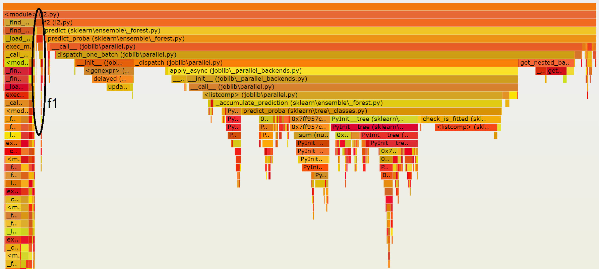
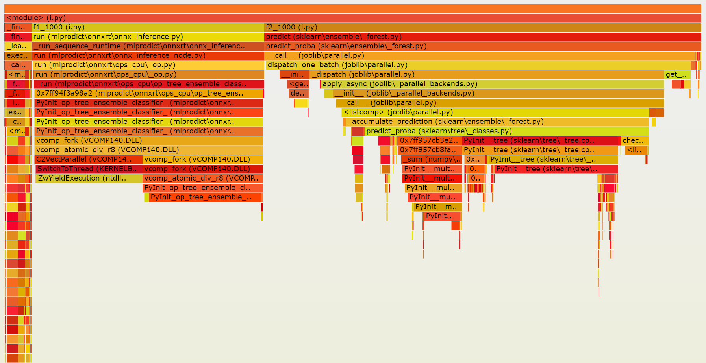

2019-12-04 RandomForestClassifier - prediction for one observation¶
I was meeting with Olivier Grisel this morning and we were wondering why scikit-learn was slow to compute the prediction of a random forest for one observation compare to what onnxruntime does, and more specically some optimized C++ code inspired from onnxruntime. We used py-spy and wrote the following script:
import numpy as np
from joblib import Memory
import sklearn
from sklearn.datasets import make_classification
from sklearn.ensemble import RandomForestClassifier
from skl2onnx import to_onnx
from mlprodict.onnxrt import OnnxInference
m = Memory(location="c:\\temp", mmap_mode='r')
@m.cache
def make_model():
X, y = make_classification(
n_features=2, n_redundant=0, n_informative=2,
random_state=1, n_clusters_per_class=1, n_samples=1000)
rf = RandomForestClassifier(
max_depth=5, n_estimators=100, max_features=1)
rf.fit(X, y)
onx = to_onnx(rf, X.astype(np.float32))
onxb = onx.SerializeToString()
return rf, X, onxb
rf, X, onxb = make_model()
X = X.astype(np.float32)
oinf = OnnxInference(onxb, runtime="python")
oinf_ort = OnnxInference(onxb, runtime="onnxruntime1")
def f1():
for _ in range(0, 10):
for i in range(0, X.shape[0]):
y = oinf.run({'X': X[i: i+1]})
def f2():
with sklearn.config_context(assume_finite=True):
for _ in range(0, 10):
for i in range(0, X.shape[0]):
rf.predict(X[i: i+1])
f1() # C++ code
f2() # scikit-learn
The script is run with the following command line:
py-spy record --native --function --rate=10 -o demo.svg -- python demo.py
The following image is a snapshot of the final result:
It shows that on my machine, scikit-learn is delayed
by joblib which is not really useful for this small
dataset. check_is_fitted takes some time despite the fact
sklearn.config_context(assume_finite=True) was used.
We then modified the script to compare this outcome to what
we would get for the prediction of 1000 observations in a row.
import numpy as np
from joblib import Memory
import sklearn
from sklearn.datasets import make_classification
from sklearn.ensemble import RandomForestClassifier
from skl2onnx import to_onnx
from mlprodict.onnxrt import OnnxInference
m = Memory(location="c:\\temp", mmap_mode='r')
@m.cache
def make_model():
X, y = make_classification(n_features=2, n_redundant=0, n_informative=2,
random_state=1, n_clusters_per_class=1, n_samples=1000)
rf = RandomForestClassifier(max_depth=5, n_estimators=100, max_features=1)
rf.fit(X, y)
onx = to_onnx(rf, X.astype(np.float32))
onxb = onx.SerializeToString()
return rf, X, onxb
rf, X, onxb = make_model()
X = X.astype(np.float32)
oinf = OnnxInference(onxb, runtime="python")
def f1_1000():
for _ in range(0, 5000):
y = oinf.run({'X': X})
def f2_1000():
with sklearn.config_context(assume_finite=True):
for _ in range(0, 5000):
rf.predict(X)
f1_1000() # C++
f2_1000() # scikit-learn
Both versions spend similar time into the functions which compute the predictions but joblib is still adding some extra time.
Figures about other classifiers can be found at Prediction time scikit-learn / onnxruntime for common datasets. It shows the predictions time on breast cancer and digits datasets.